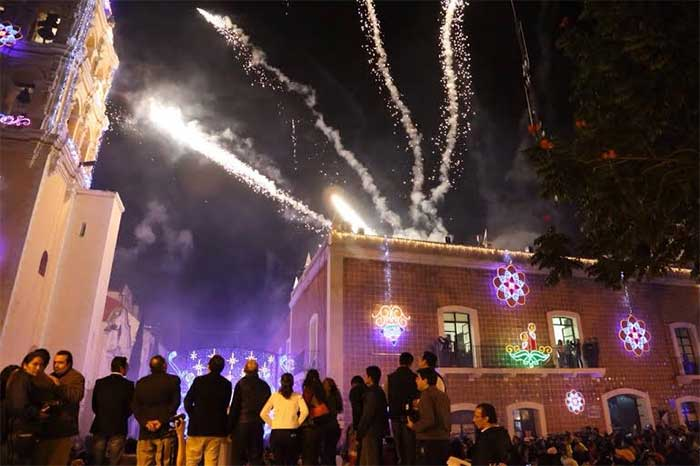

La noche del martes 25 de Noviembre del 2014, ante miles de familias y un espectáculo de pirotecnia, el alcalde de Atlixco, José Luis Galeazzi Berra, inauguró la Cuarta Edición de la Villa Iluminada, que concluirá el próximo 6 de enero de 2015. A través de 3 mil figuras nuevas y durante 43 días, todos los visitantes podrán disfrutar de la belleza arquitectónica de la ciudad de Atlixco, que se embellece con luces coloridas de variantes tonos y escenas alusivas a la época decembrina y la identidad atlixquense. Posterior al encendido, hubo un espectáculo de nieve en la calle Constitución, que miles de pequeños, con sus familias, disfrutaron al máximo. Villa Iluminada espera la llegada de entre 450 a 500 mil visitantes, lo cual permitirá tener una derrama económica de 55 a 60 millones de pesos, pues habrá poco más de 100 eventos culturales y artísticos, con la participación de 30 grupos provenientes de países como Guatemala, Colombia, España, Perú, Irlanda, Libia, Chile, Kenia e Italia, así como de México y la región.
